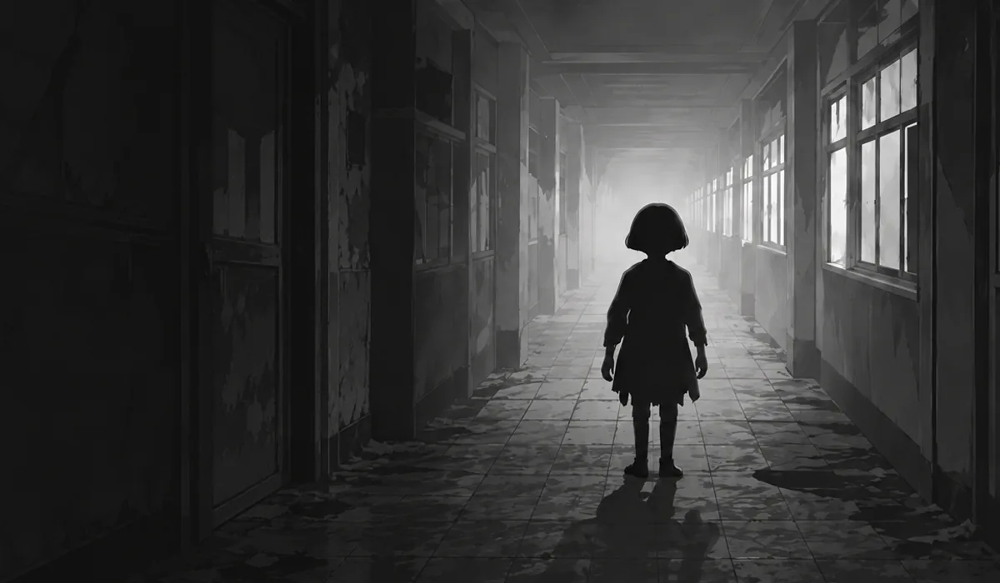
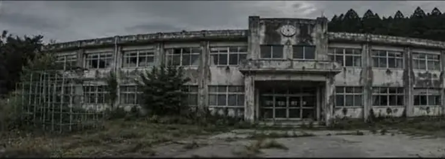
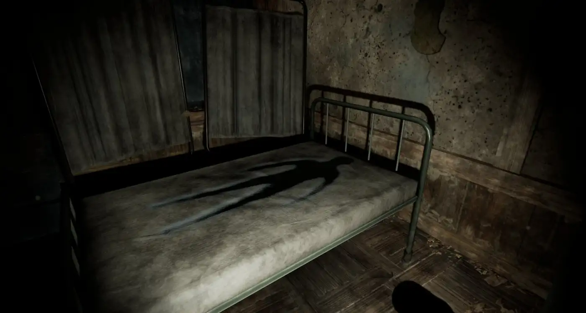

登録者数10万人を
目指せ。
あなたは噂の廃校「屠屋（ほふりや）小学校」へ足を踏み入れる。
目的は、学校に残された都市伝説を撮影し、動画サイトに投稿して収益を得ること。
果たしてあなたは登録者数10万人を達成できるのか—。
そして、その先に待つものとは……？

廃小学校を探索する一人称視点の3Dホラーゲームです。プレイヤーは心霊系動画の配信者として、インターネットで流行っている都市伝説のひとつ、「ワタヌキさん」の噂の真相を確かめるため、動画撮影に向かう。そこで多くの怪奇現象に遭遇することになる。
登録者数10万人を
目指せ。
あなたは噂の廃校「屠屋（ほふりや）小学校」へ足を踏み入れる。
目的は、学校に残された都市伝説を撮影し、動画サイトに投稿して収益を得ること。
果たしてあなたは登録者数10万人を達成できるのか—。
そして、その先に待つものとは……？
1：名無しさんのお願いっぱい。 ：2024/05/28(火) 23:37:12.34
廃校になったと噂の屠屋小学校に潜入してきた
写真や情報を共有しようぜ
不気味な噂が絶えないらしい…
場所は〇〇県△△市
心霊現象、曰く付きのモノ、何でもOK


01 / 06個人・法人を問わず、『怖録 -Osoroku-』のゲームプレイ動画の投稿・配信が可能です。以下のガイドラインをご確認のうえ、お楽しみください。
※ガイドラインは予告なく変更される場合があります。変更後の動画投稿や配信につきましては、変更後のガイドラインが適用されます。